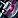
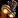
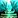
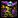
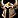
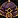
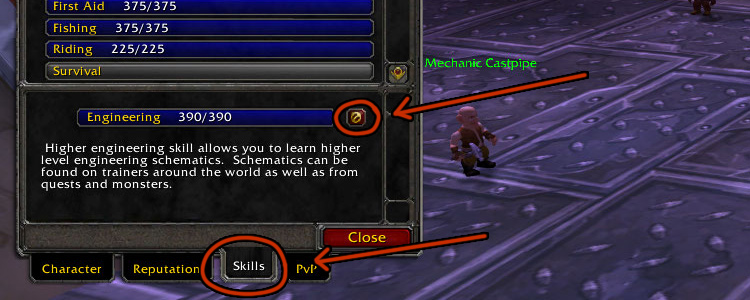
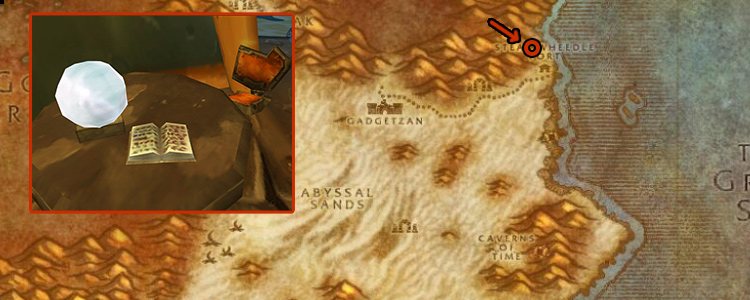

At Engineering skill 200 and character Level 30, you can specialize in Gnomish or Goblin Engineering. This guide lists the items each specialization can craft to help you choose between the two. Some items require a specific specialization to use, while others are crafted by one specialization but are usable by any engineer.
Gnomish vs. Goblin Engineering
One isn’t better than the other. It just depends on which toys and tools you prefer. Here’s a quick breakdown to help you decide.
If You Choose Goblin
- You get Dimensional Ripper - Everlook – teleports you to Everlook in Winterspring.
- You lose access to

Gnomish Death Ray – a high-damage trinket that also hurts you. - You miss out on Gnomish Battle Chicken – a trinket that summons a chicken ally in combat.
If You Choose Gnomish
- You get Ultrasafe Transporter - Gadgetzan – teleports you to Gadgetzan in Tanaris.
- You can’t craft your own Goblin Sapper Charges, but you can still buy them.
- You’ll also have to buy

Goblin Rocket Boots from others. These can fail and explode when used.
Can you learn both Gnomish and Goblin Engineering?
No, you can’t have both at the same time. You can only pick one. But there’s a trick to get the benefits of both.
Here’s what I usually do:
1. Start with Gnomish -> 2. Craft all the useful BoP items - > 3. Drop Engineering and re-level it -> 4. Switch to Goblin as my final spec
You’ll keep any Gnomish items that don’t require the spec to use, and you can craft all the Goblin items after switching. The only thing you lose is the Gnomish teleporter to Gadgetzan.
NOTE: This method takes time and gold since you have to re-level Engineering. (See the end of the guide for a full step-by-step on how to switch.)
Full list of Gnomish and Goblin Engineering Recipes
When picking a specialization, focus on the items that are exclusive to that spec. Many recipes can be used by both, so you can often just buy those from the Auction House.
There are three types of Engineering items:
- Spec-exclusive items - Only usable if you have that spec active.
- Bind on Pickup (BoP) items - Only one spec can craft them, but you can still use them after switching.
- Bind on Equip (BoE) items - Usable by both specs, but only one can craft them. You can buy these.
1. Specialization-Exclusive items
You can only use these if you’re currently Gnomish or Goblin. You lose access if you switch.
Gnomish |
Goblin |
|---|---|
| Ultrasafe Transporter - Gadgetzan - Teleport to Gadgetzan in Tanaris | Dimensional Ripper - Everlook - Teleport to Everlook in Winterspring |
 World Enlarger - A fun item that makes you smaller. This effect is similar to the Noggenfogger elixir's shrink. |
- |
2. Bind on Pickup (BoP) items
Only one spec can craft these, but you can still use them even after switching specs.
Gnomish |
Goblin |
|---|---|
 Lil' Smoky - Non-combat pet. |
Pet Bombling - Non-combat pet. |
| Gnomish Battle Chicken - A trinket that creates a Battle Chicken that will fight for you for 1.50 min or until it is destroyed. (20 Min CD) | Goblin Bomb Dispenser - Creates a mobile bomb that charges the nearest enemy and explodes for 315 to 385 fire damage. (30 Min CD) |
| Gnomish Death Ray - A trinket that does high damage to both you and your target. 4-sec cast. (5 Min CD) | Goblin Dragon Gun - Trinket that Deals 61 to 69 fire damage for 10 sec to all targets in a cone in front of the engineer using the weapon.(5 Min CD) |
 Goblin Mining Helmet - Mail helm with +5 Mining |
|
| - |  Goblin Construction Helmet - Cloth Helm with +15 Fire Resist. With on use effect that absorbs 300 to 500 Fire damage. Lasts 1 min. (1 Hour CD) |
3. Bind on Equip (BoE) items and Consumables
Anyone can use these, but only one spec can craft them. You can just buy them if needed.
Gnomish and Goblin Engineering Quest
To become a Gnomish or Goblin Engineer, you have to complete a short questline and turn in a few crafted items. Use the tabs below to see the exact steps for each specialization.
To Become a Gnomish Engineer, you have to complete the following quests:
|
|
|---|---|
|
|
To complete the quest, you will need the following items:
The  Schematic: Accurate Scope recipe is sold by Mazk Snipeshot in Booty Bay. It's a limited-supply recipe, so you must wait if someone bought it before you. (or just buy it at the Auction House)
Schematic: Accurate Scope recipe is sold by Mazk Snipeshot in Booty Bay. It's a limited-supply recipe, so you must wait if someone bought it before you. (or just buy it at the Auction House)
Total Raw Materials needed: |
Crafting step-by-step: |
|---|---|
You will also need 18x |
|
To Become a Goblin Engineer, you have to complete the following quests:
- Pick up
 Goblin Engineering from Tinkerwiz in Ratchet.
Goblin Engineering from Tinkerwiz in Ratchet. - Go to Gadgetzan in Tanaris and pick up The Pledge of Secrecy from Nixx Sprocketspring.
- Right-click on the Nixx's Pledge of Secrecy in your inventory to complete the quest. Then pick up Show Your Work.
To complete the quest, you will need to craft the following items:
- 20x Big Iron Bomb
- 20x
 Solid Dynamite
Solid Dynamite - 5x
 Explosive Sheep
Explosive Sheep
Total Raw Materials needed: |
Crafting step-by-step: |
|---|---|
If you haven't saved the
|
If you haven't crafted the
|
Changing Engineering Specialization
The only way to switch your specialization is to COMPLETELY unlearn Engineering and then level it back up again. Here is how to do it step by step:
Step 1. Unlearn Engineering
Open your character info, click on the Skills tab at the bottom, and unlearn Engineering.
Doing this will cause you to lose all your recipes and skill points!!!

Step 2. Level Engineering
You have to level Engineering back up to 200 again. You don't have to do any quests again after this.
Use my Classic Engineering Leveling Guide 1-300 to quickly get back to 200.
Step 3. "Soothsaying for Dummies"
Now go to Steamwheedle Port in Tanaris and click on the "Soothsaying for Dummies" book inside a hut. The exact location is marked in the picture below. Once you've read it, you can take up the other specialization.
